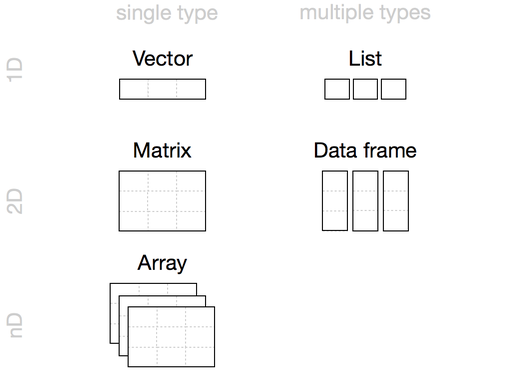
R
R Packages
An R package usually includes:
- reusable functions
- documentation describing how to use the function
- sample data
Dataset in Packages
To list datasets in all the available packages, use the following command:
To have a summary table where packages are sorted based on number of datasets they contains and the list of package they have (one row per package), use the following command:
.packages(all.available = TRUE) |>
data(package = _) |>
_$results |>
as.data.frame() |>
dplyr::group_by(Package) |>
dplyr::summarize(
N = dplyr::n(),
Datasets = stringr::str_flatten_comma(Title)
) |>
dplyr::arrange(desc(N))Primitive Data Types
The primitive (also known as singleton/simple) data types in R are:
- character
- numeric
- logical
- raw
- imaginary numbers
To know the datatype of an object, run the command:
class(x) # give the data type of xTo know the type of the variables of each variable.
x |>
slice(0) |>
glimpse()Mixing Data Types
- character + numeric –> character
- numeric + logical –> numeric
- numeric + character + logical –> character
Compound Data Types
The compound (also know as collection/sttructure) data types in R are:
- vector: hold single type of data
NoteCreating Vector
The c() function (combine multiple elements) can be used to create vectors in R.
x <- c(1, 2, 3, 4)- matrix: 2D vector
- array: nD vector
- list: generic vector, can hold mixed type of data, eg, one element can be a character, another can be a list of integers, and the third could be a logical
- data frame: table where columns represent vectors
-
tibbles: data frames, but slightly tweaked to work better with
tidyverse–when printing tibbles, only the first few columns that fit into the screen will be shown
NotePrinting tibble All Columns
To construct small tibble by hand, use the tribble function as follows:
df <- tribble(
~var1, ~var2, ~var3
"A", 1, TRUE,
"B", 2, FALSE,
"C", 3, TRUE
)- factor
To know the data structure and length of the object, run the command:
Basics Operations
Assignment
x <- 3 # assign 3 to x (x gets 3)
(x <- 3) # assign 3 to x (x gets 3) & print the result to console[1] 3Getting Help
args(round) # print the argument list of function
?round # show documentation of function in Help windowDealing with Structure
[1] 50[1] "dog" "cat"animals[animals == "dog" | animals == "cat"][1] "dog" "cat"Statistics
Initial Steps
File Paths
The here package makes it easy to point to files starting from the project main directory.
Store Locally
Loading file from repository and saving it locally on disk. It is always a good idea to structure the workspace–for more information, see Best Practices for Scientific Computing paper.
file_name <- "portal_data_joined.csv"
file_path <- here("data", file_name)
if (!file.exists(file_path)) {
download.file(
url = "https://ndownloader.figshare.com/files/2292169",
destfile = file_path
)
}Load Locally
surveys <- read.csv(file_path)
glimpse(surveys)Rows: 34,786
Columns: 13
$ record_id <int> 1, 72, 224, 266, 349, 363, 435, 506, 588, 661, 748, 84…
$ month <int> 7, 8, 9, 10, 11, 11, 12, 1, 2, 3, 4, 5, 6, 8, 9, 10, 1…
$ day <int> 16, 19, 13, 16, 12, 12, 10, 8, 18, 11, 8, 6, 9, 5, 4, …
$ year <int> 1977, 1977, 1977, 1977, 1977, 1977, 1977, 1978, 1978, …
$ plot_id <int> 2, 2, 2, 2, 2, 2, 2, 2, 2, 2, 2, 2, 2, 2, 2, 2, 2, 2, …
$ species_id <chr> "NL", "NL", "NL", "NL", "NL", "NL", "NL", "NL", "NL", …
$ sex <chr> "M", "M", "", "", "", "", "", "", "M", "", "", "M", "M…
$ hindfoot_length <int> 32, 31, NA, NA, NA, NA, NA, NA, NA, NA, NA, 32, NA, 34…
$ weight <int> NA, NA, NA, NA, NA, NA, NA, NA, 218, NA, NA, 204, 200,…
$ genus <chr> "Neotoma", "Neotoma", "Neotoma", "Neotoma", "Neotoma",…
$ species <chr> "albigula", "albigula", "albigula", "albigula", "albig…
$ taxa <chr> "Rodent", "Rodent", "Rodent", "Rodent", "Rodent", "Rod…
$ plot_type <chr> "Control", "Control", "Control", "Control", "Control",…Clean Names
surveys <- surveys |>
janitor::clean_names()Inspecting Data
class(surveys) # data type[1] "data.frame"str(surveys) # structure'data.frame': 34786 obs. of 13 variables:
$ record_id : int 1 72 224 266 349 363 435 506 588 661 ...
$ month : int 7 8 9 10 11 11 12 1 2 3 ...
$ day : int 16 19 13 16 12 12 10 8 18 11 ...
$ year : int 1977 1977 1977 1977 1977 1977 1977 1978 1978 1978 ...
$ plot_id : int 2 2 2 2 2 2 2 2 2 2 ...
$ species_id : chr "NL" "NL" "NL" "NL" ...
$ sex : chr "M" "M" "" "" ...
$ hindfoot_length: int 32 31 NA NA NA NA NA NA NA NA ...
$ weight : int NA NA NA NA NA NA NA NA 218 NA ...
$ genus : chr "Neotoma" "Neotoma" "Neotoma" "Neotoma" ...
$ species : chr "albigula" "albigula" "albigula" "albigula" ...
$ taxa : chr "Rodent" "Rodent" "Rodent" "Rodent" ...
$ plot_type : chr "Control" "Control" "Control" "Control" ...surveys |>
slice(0) |>
glimpse()Rows: 0
Columns: 13
$ record_id <int>
$ month <int>
$ day <int>
$ year <int>
$ plot_id <int>
$ species_id <chr>
$ sex <chr>
$ hindfoot_length <int>
$ weight <int>
$ genus <chr>
$ species <chr>
$ taxa <chr>
$ plot_type <chr> summary(surveys) record_id month day year plot_id
Min. : 1 Min. : 1.000 Min. : 1.0 Min. :1977 Min. : 1.00
1st Qu.: 8964 1st Qu.: 4.000 1st Qu.: 9.0 1st Qu.:1984 1st Qu.: 5.00
Median :17762 Median : 6.000 Median :16.0 Median :1990 Median :11.00
Mean :17804 Mean : 6.474 Mean :16.1 Mean :1990 Mean :11.34
3rd Qu.:26655 3rd Qu.:10.000 3rd Qu.:23.0 3rd Qu.:1997 3rd Qu.:17.00
Max. :35548 Max. :12.000 Max. :31.0 Max. :2002 Max. :24.00
species_id sex hindfoot_length weight
Length:34786 Length:34786 Min. : 2.00 Min. : 4.00
Class :character Class :character 1st Qu.:21.00 1st Qu.: 20.00
Mode :character Mode :character Median :32.00 Median : 37.00
Mean :29.29 Mean : 42.67
3rd Qu.:36.00 3rd Qu.: 48.00
Max. :70.00 Max. :280.00
NA's :3348 NA's :2503
genus species taxa plot_type
Length:34786 Length:34786 Length:34786 Length:34786
Class :character Class :character Class :character Class :character
Mode :character Mode :character Mode :character Mode :character
Print top and bottom obervations
head(surveys) record_id month day year plot_id species_id sex hindfoot_length weight
1 1 7 16 1977 2 NL M 32 NA
2 72 8 19 1977 2 NL M 31 NA
3 224 9 13 1977 2 NL NA NA
4 266 10 16 1977 2 NL NA NA
5 349 11 12 1977 2 NL NA NA
6 363 11 12 1977 2 NL NA NA
genus species taxa plot_type
1 Neotoma albigula Rodent Control
2 Neotoma albigula Rodent Control
3 Neotoma albigula Rodent Control
4 Neotoma albigula Rodent Control
5 Neotoma albigula Rodent Control
6 Neotoma albigula Rodent Controltail(surveys) record_id month day year plot_id species_id sex hindfoot_length weight
34781 26787 9 27 1997 7 PL F 21 16
34782 26966 10 25 1997 7 PL M 20 16
34783 27185 11 22 1997 7 PL F 21 22
34784 27792 5 2 1998 7 PL F 20 8
34785 28806 11 21 1998 7 PX NA NA
34786 30986 7 1 2000 7 PX NA NA
genus species taxa plot_type
34781 Peromyscus leucopus Rodent Rodent Exclosure
34782 Peromyscus leucopus Rodent Rodent Exclosure
34783 Peromyscus leucopus Rodent Rodent Exclosure
34784 Peromyscus leucopus Rodent Rodent Exclosure
34785 Chaetodipus sp. Rodent Rodent Exclosure
34786 Chaetodipus sp. Rodent Rodent ExclosureRetrieve specific element/row/column
surveys[1, 1] # element[1,1][1] 1surveys[1, ] # row 1 record_id month day year plot_id species_id sex hindfoot_length weight
1 1 7 16 1977 2 NL M 32 NA
genus species taxa plot_type
1 Neotoma albigula Rodent Controlhead(surveys[, 1]) # column 1[1] 1 72 224 266 349 363head(surveys$sex) # column by name[1] "M" "M" "" "" "" "" Dealing with Factor (Categorical) Columns
R convert columns that contain characters to factors by default. Factors are treated as integer vectors. By default, R sorts levels in alphabetical order.
Reorder factors (to get better plots)
Basic Plotting
Histogram
# plot(surveys$sex) # not possible
plot(surveys$sex_ordered)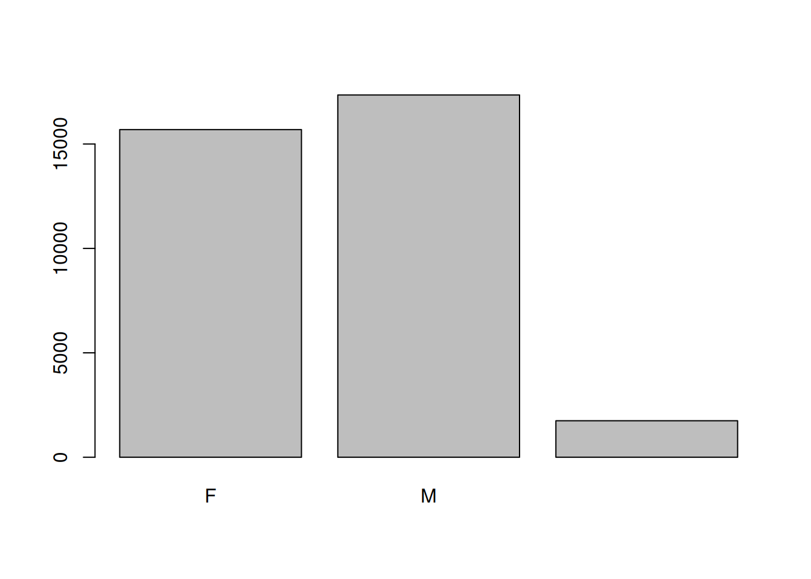
Enhance the plot
Data Manipulation
-
tdlyr- makes manipulation of data easier
- built to work with data frames directly
- can directly work with data stored in an external database which give the advantage of only bringing what we need to the memory to work on without having to bring the whole database
-
tidyr- allows to swiftly convert b/w different data formats for plotting & analysis in order to accommodate the different requirements by different functions
- sometime we want one row per measurement
- other times we want the data aggregated like when plotting
- allows to swiftly convert b/w different data formats for plotting & analysis in order to accommodate the different requirements by different functions
Before using tdlyr and tidyr:
- Install
tidyversepackage: umbrella-package that install several packages (tidyr, dplyr, ggplot2 tibble, magrittr, etc.) - Load the package each session
Load packages
Load & inspect data
spc_tbl_ [34,786 × 13] (S3: spec_tbl_df/tbl_df/tbl/data.frame)
$ record_id : num [1:34786] 1 72 224 266 349 363 435 506 588 661 ...
$ month : num [1:34786] 7 8 9 10 11 11 12 1 2 3 ...
$ day : num [1:34786] 16 19 13 16 12 12 10 8 18 11 ...
$ year : num [1:34786] 1977 1977 1977 1977 1977 ...
$ plot_id : num [1:34786] 2 2 2 2 2 2 2 2 2 2 ...
$ species_id : chr [1:34786] "NL" "NL" "NL" "NL" ...
$ sex : chr [1:34786] "M" "M" NA NA ...
$ hindfoot_length: num [1:34786] 32 31 NA NA NA NA NA NA NA NA ...
$ weight : num [1:34786] NA NA NA NA NA NA NA NA 218 NA ...
$ genus : chr [1:34786] "Neotoma" "Neotoma" "Neotoma" "Neotoma" ...
$ species : chr [1:34786] "albigula" "albigula" "albigula" "albigula" ...
$ taxa : chr [1:34786] "Rodent" "Rodent" "Rodent" "Rodent" ...
$ plot_type : chr [1:34786] "Control" "Control" "Control" "Control" ...
- attr(*, "spec")=
.. cols(
.. record_id = col_double(),
.. month = col_double(),
.. day = col_double(),
.. year = col_double(),
.. plot_id = col_double(),
.. species_id = col_character(),
.. sex = col_character(),
.. hindfoot_length = col_double(),
.. weight = col_double(),
.. genus = col_character(),
.. species = col_character(),
.. taxa = col_character(),
.. plot_type = col_character()
.. )
- attr(*, "problems")=<externalptr> # view(surveys) # preview in the viewer window, avoid when renderingSelection
Select certain columns
select(surveys, plot_id, species_id, weight)# A tibble: 34,786 × 3
plot_id species_id weight
<dbl> <chr> <dbl>
1 2 NL NA
2 2 NL NA
3 2 NL NA
4 2 NL NA
5 2 NL NA
6 2 NL NA
7 2 NL NA
8 2 NL NA
9 2 NL 218
10 2 NL NA
# ℹ 34,776 more rowsSelect all columns except …
select(surveys, -sex)# A tibble: 34,786 × 12
record_id month day year plot_id species_id hindfoot_length weight genus
<dbl> <dbl> <dbl> <dbl> <dbl> <chr> <dbl> <dbl> <chr>
1 1 7 16 1977 2 NL 32 NA Neotoma
2 72 8 19 1977 2 NL 31 NA Neotoma
3 224 9 13 1977 2 NL NA NA Neotoma
4 266 10 16 1977 2 NL NA NA Neotoma
5 349 11 12 1977 2 NL NA NA Neotoma
6 363 11 12 1977 2 NL NA NA Neotoma
7 435 12 10 1977 2 NL NA NA Neotoma
8 506 1 8 1978 2 NL NA NA Neotoma
9 588 2 18 1978 2 NL NA 218 Neotoma
10 661 3 11 1978 2 NL NA NA Neotoma
# ℹ 34,776 more rows
# ℹ 3 more variables: species <chr>, taxa <chr>, plot_type <chr>Select rows based on criteria
filter(surveys, year == 1995)# A tibble: 1,180 × 13
record_id month day year plot_id species_id sex hindfoot_length weight
<dbl> <dbl> <dbl> <dbl> <dbl> <chr> <chr> <dbl> <dbl>
1 22314 6 7 1995 2 NL M 34 NA
2 22728 9 23 1995 2 NL F 32 165
3 22899 10 28 1995 2 NL F 32 171
4 23032 12 2 1995 2 NL F 33 NA
5 22003 1 11 1995 2 DM M 37 41
6 22042 2 4 1995 2 DM F 36 45
7 22044 2 4 1995 2 DM M 37 46
8 22105 3 4 1995 2 DM F 37 49
9 22109 3 4 1995 2 DM M 37 46
10 22168 4 1 1995 2 DM M 36 48
# ℹ 1,170 more rows
# ℹ 4 more variables: genus <chr>, species <chr>, taxa <chr>, plot_type <chr>Piping
Sending the results of one function to another
# in multiple steps
survey_less5 <- filter(surveys, weight < 5)
survey_sml <- select(survey_less5, species_id, sex, weight)
# in one long step
survey_sml <- select(filter(surveys, weight < 5), species_id, sex, weight)
# using pipe %>% of magritter package. Use Ctrl + Shift + M to add
survey_sml <- surveys %>%
filter(weight < 5) %>%
select(species_id, sex, weight)Summary
Summary of groups (1+ columns)
one factor
# A tibble: 3 × 2
sex mean_weight
<chr> <dbl>
1 F 42.2
2 M 43.0
3 <NA> 64.7two factors
# A tibble: 81 × 3
# Groups: sex [3]
sex species mean_weight
<chr> <chr> <dbl>
1 F albigula 154.
2 F baileyi 30.2
3 F eremicus 22.8
4 F flavus 7.97
5 F fulvescens 13.7
6 F fulviventer 69
7 F hispidus 69.0
8 F leucogaster 31.1
9 F leucopus 19.3
10 F maniculatus 22.1
# ℹ 71 more rows# A tibble: 81 × 3
# Groups: species [40]
species sex mean_weight
<chr> <chr> <dbl>
1 albigula F 154.
2 albigula M 166.
3 albigula <NA> 168.
4 audubonii <NA> NaN
5 baileyi F 30.2
6 baileyi M 33.8
7 baileyi <NA> 30.6
8 bilineata <NA> NaN
9 brunneicapillus <NA> NaN
10 chlorurus <NA> NaN
# ℹ 71 more rowsto avoid using na.rm = FALSE each statistics
# A tibble: 59 × 5
# Groups: species [22]
species sex mean_weight sd_weight sd_count
<chr> <chr> <dbl> <dbl> <int>
1 albigula F 154. 39.2 652
2 albigula M 166. 49.0 484
3 albigula <NA> 168. 44.2 16
4 baileyi F 30.2 5.27 1617
5 baileyi M 33.8 8.27 1188
6 baileyi <NA> 30.6 9.96 5
7 eremicus F 22.8 4.57 568
8 eremicus M 20.6 3.49 689
9 eremicus <NA> 17.7 0.577 3
10 flavus F 7.97 1.69 742
# ℹ 49 more rowsarrange by mean weight
# A tibble: 59 × 5
# Groups: species [22]
species sex mean_weight sd_weight sd_count
<chr> <chr> <dbl> <dbl> <int>
1 flavus <NA> 6 1.63 4
2 taylori M 7.36 0.842 14
3 flavus M 7.89 1.59 802
4 flavus F 7.97 1.69 742
5 taylori F 9.16 2.24 31
6 montanus M 9.5 1.29 4
7 megalotis M 10.1 1.73 1339
8 montanus F 11 2.16 4
9 megalotis <NA> 11.1 2.57 12
10 megalotis F 11.1 2.56 1184
# ℹ 49 more rowsin descending order
# A tibble: 59 × 5
# Groups: species [22]
species sex mean_weight sd_weight sd_count
<chr> <chr> <dbl> <dbl> <int>
1 albigula <NA> 168. 44.2 16
2 albigula M 166. 49.0 484
3 albigula F 154. 39.2 652
4 hispidus <NA> 130 NA 1
5 spilosoma M 130 NA 1
6 spectabilis M 122. 24.0 1220
7 spectabilis <NA> 120 18.5 18
8 spectabilis F 118. 21.5 1106
9 fulviventer F 69 37.8 16
10 hispidus F 69.0 29.7 98
# ℹ 49 more rowsby count
# A tibble: 59 × 5
# Groups: species [22]
species sex mean_weight sd_weight sd_count
<chr> <chr> <dbl> <dbl> <int>
1 hispidus <NA> 130 NA 1
2 intermedius <NA> 18 NA 1
3 leucopus <NA> 25 NA 1
4 spilosoma F 57 NA 1
5 spilosoma M 130 NA 1
6 fulviventer <NA> 40.5 6.36 2
7 leucogaster <NA> 29 11.3 2
8 eremicus <NA> 17.7 0.577 3
9 ordii <NA> 50.7 6.51 3
10 sp. F 20.7 1.15 3
# ℹ 49 more rowsCount
Count of a categorical column
Reshaping
Using gather & spreed
prepare the needed data first
creating a 2D table where each dimension represent a category the cell will represent a statistics
tibble [24 × 11] (S3: tbl_df/tbl/data.frame)
$ plot_id : num [1:24] 1 2 3 4 5 6 7 8 9 10 ...
$ Baiomys : num [1:24] 7 6 8.61 NA 7.75 ...
$ Chaetodipus : num [1:24] 22.2 25.1 24.6 23 18 ...
$ Dipodomys : num [1:24] 60.2 55.7 52 57.5 51.1 ...
$ Neotoma : num [1:24] 156 169 158 164 190 ...
$ Onychomys : num [1:24] 27.7 26.9 26 28.1 27 ...
$ Perognathus : num [1:24] 9.62 6.95 7.51 7.82 8.66 ...
$ Peromyscus : num [1:24] 22.2 22.3 21.4 22.6 21.2 ...
$ Reithrodontomys: num [1:24] 11.4 10.7 10.5 10.3 11.2 ...
$ Sigmodon : num [1:24] NA 70.9 65.6 82 82.7 ...
$ Spermophilus : num [1:24] NA NA NA NA NA NA NA NA NA NA ...head(surveys_spread)# A tibble: 6 × 11
plot_id Baiomys Chaetodipus Dipodomys Neotoma Onychomys Perognathus Peromyscus
<dbl> <dbl> <dbl> <dbl> <dbl> <dbl> <dbl> <dbl>
1 1 7 22.2 60.2 156. 27.7 9.62 22.2
2 2 6 25.1 55.7 169. 26.9 6.95 22.3
3 3 8.61 24.6 52.0 158. 26.0 7.51 21.4
4 4 NA 23.0 57.5 164. 28.1 7.82 22.6
5 5 7.75 18.0 51.1 190. 27.0 8.66 21.2
6 6 NA 24.9 58.6 180. 25.9 7.81 21.8
# ℹ 3 more variables: Reithrodontomys <dbl>, Sigmodon <dbl>, Spermophilus <dbl>bring spread back
tibble [240 × 3] (S3: tbl_df/tbl/data.frame)
$ plot_id : num [1:240] 1 2 3 4 5 6 7 8 9 10 ...
$ genus : chr [1:240] "Baiomys" "Baiomys" "Baiomys" "Baiomys" ...
$ mean_weight: num [1:240] 7 6 8.61 NA 7.75 ...head(surveys_gw)# A tibble: 6 × 3
plot_id genus mean_weight
<dbl> <chr> <dbl>
1 1 Baiomys 7
2 2 Baiomys 6
3 3 Baiomys 8.61
4 4 Baiomys NA
5 5 Baiomys 7.75
6 6 Baiomys NA Filtering
Remove missing data
Filter those that has sample greater than 50
filter only those in the indicated category
Saving to disk
write_cvs()For large and richer datasets, using parquet might be a better choice than .csv, as discussed in R4DS Section 22.4
If you’re working in a project, R4DS suggests calling the file that does data prep work something like 0-cleanup.qmd. The 0 in the file name suggests that this should be run before anything else.
If the input data files change over time, one might consider learning a tool like targets to set up your data cleaning code to automatically re-run whenever one of the input files is modified.
Visualization
- Help in making complex plots from data frames in simple steps
- ggplot graphics are built step by step by adding new elements; this makes it flexible as well as customization
- To get list of ggplot2 geometric objects:
help.search("gemo_", package="ggplot2") - To know the aesthetic specification each geom_ can take:
vignette("ggplot2-specs")
Step 1: Bind the plot to specific data frame
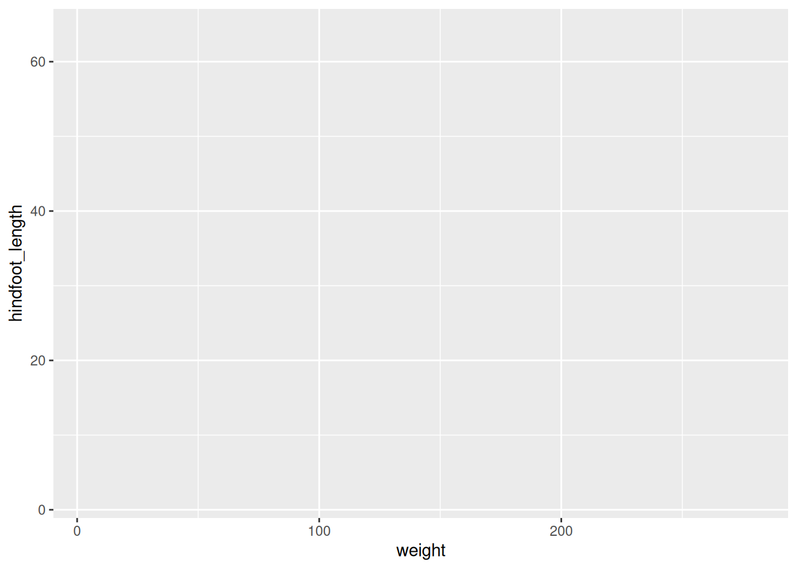

Step 2: Select the type of the plot
- scatter plot, dot plots, etc. > geom_point()
- boxplots > geom_boxplot()
- trend lines, time series, etc. > geom_line()
Scatter plot
surveys_plot + geom_point()
# add transparency
surveys_plot + geom_point(alpha = 0.1)
# color if not used in binding
surveys_plot + geom_point(alpha = 0.1, color = "black")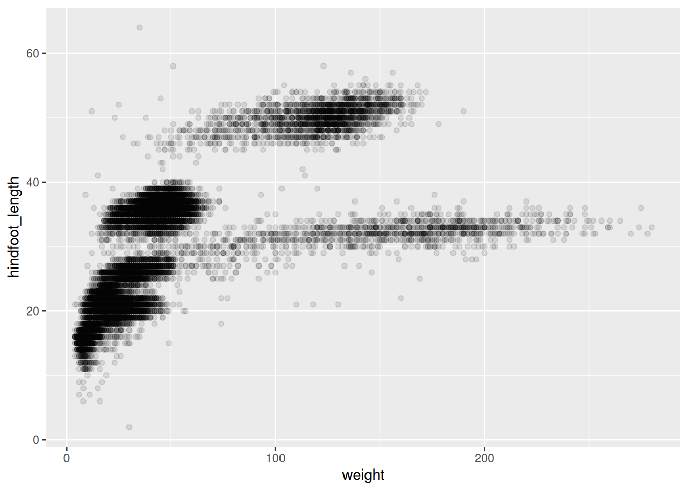
# add color if not used in binding
surveys_plot + geom_point(alpha = 0.1, aes(color = species_id))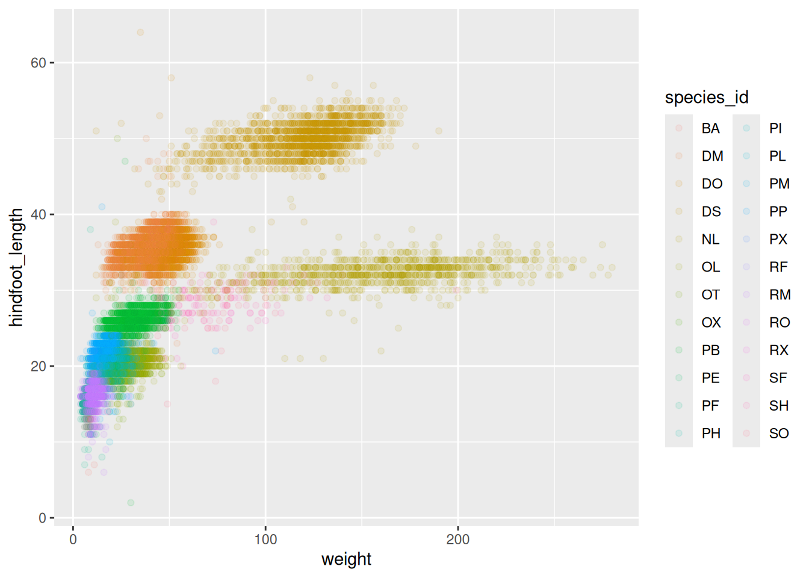
# make the color blend by introducing small random variation in points locations
# used when having small data sets
surveys_plot + geom_jitter(alpha = 0.1)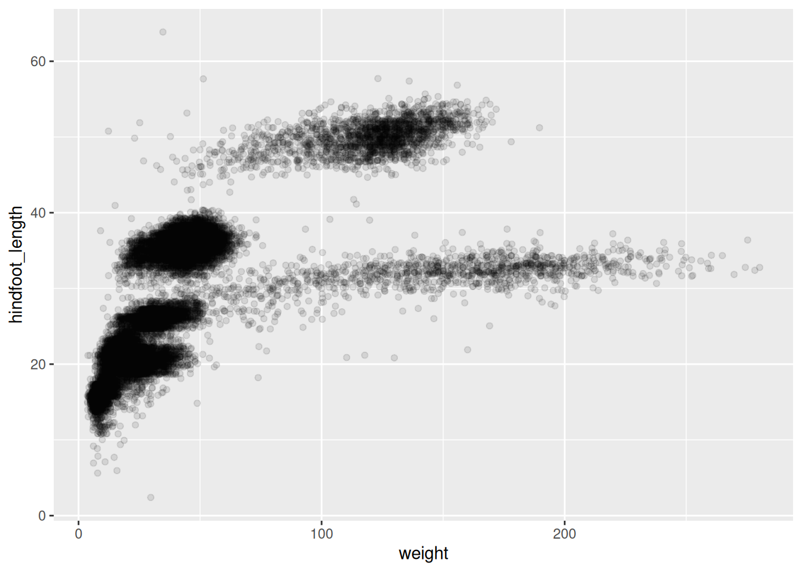
Boxplot
surveys_plot <- ggplot(
data = survey_complete,
mapping = aes(x = species_id, y = weight)
)
surveys_plot + geom_boxplot()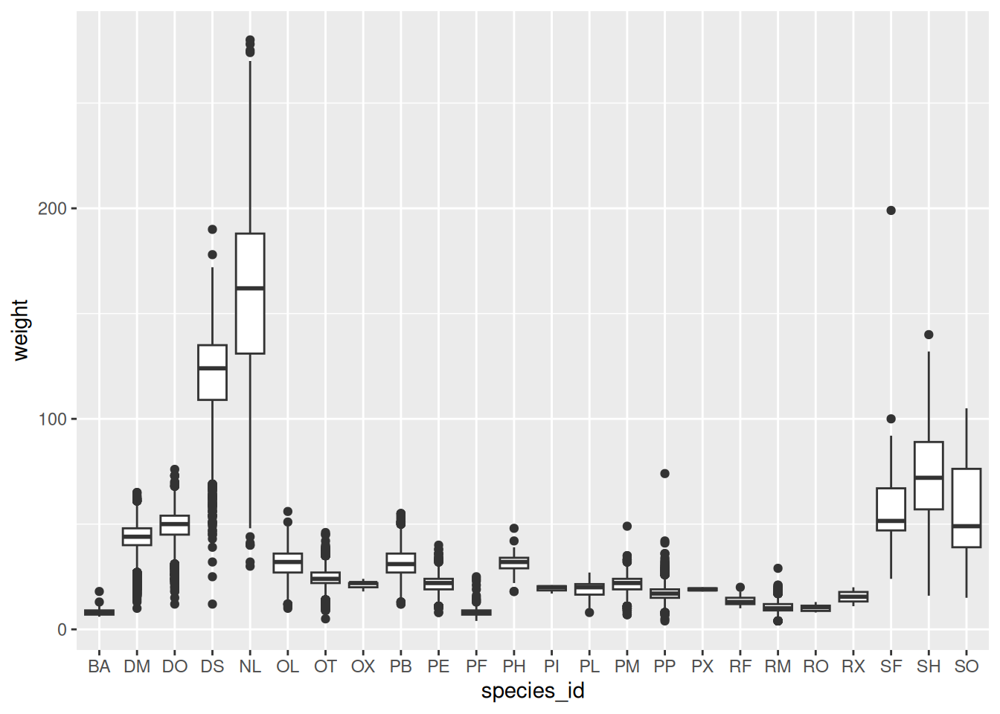
# show data
surveys_plot + geom_boxplot(alpha = 0.5) +
geom_jitter(alpha = 0.1, color = "tomato")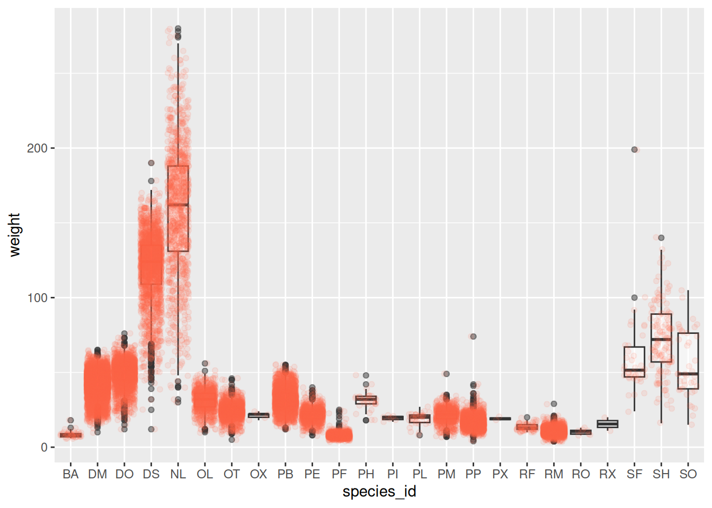
# bring boxplot layer in front
surveys_plot + geom_jitter(alpha = 0.1, color = "tomato") +
geom_boxplot(alpha = 0.7)Time series data

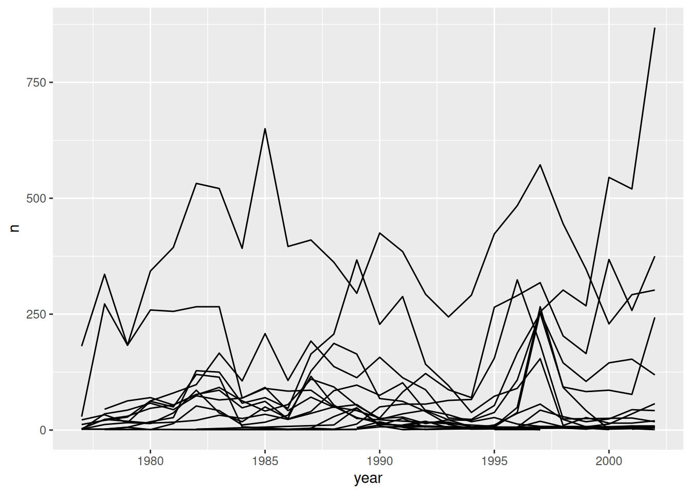
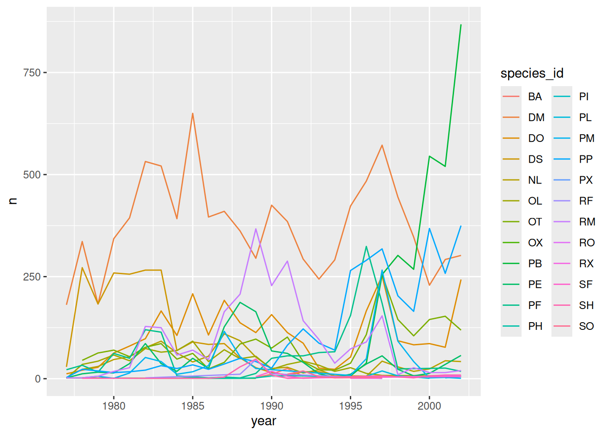
# split into multiple plots
surveys_plot + geom_line() + facet_wrap(~species_id)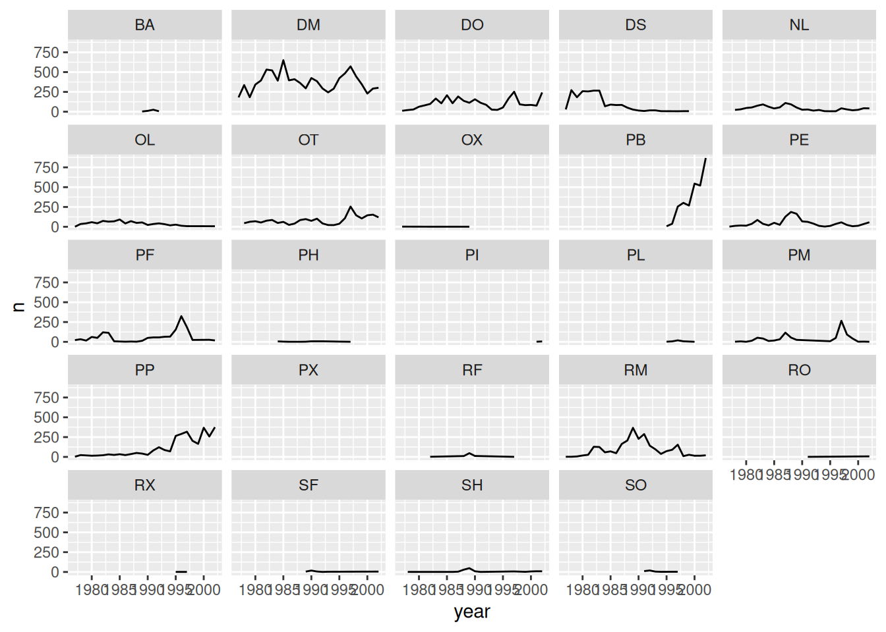
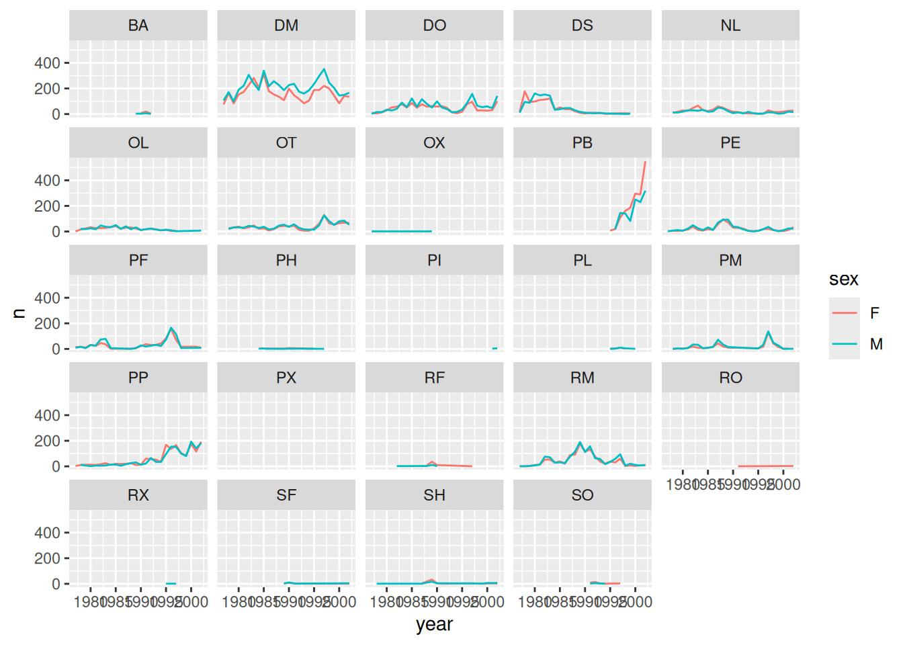
# remove background
surveys_plot + geom_line(aes(color = sex)) +
facet_wrap(~species_id) +
theme_bw() +
theme(panel.grid = element_blank())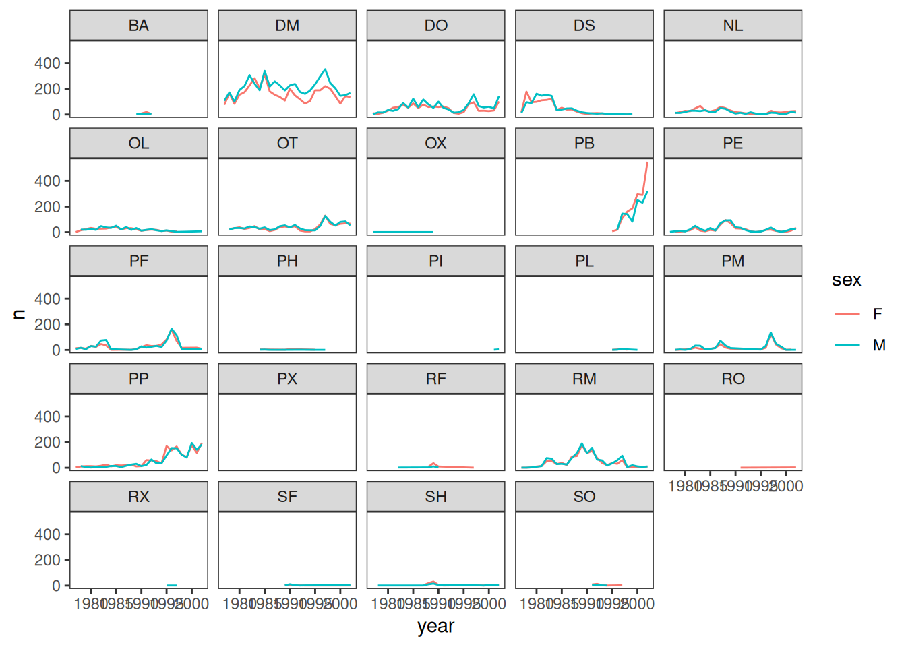
Colors
cols4all package
cols4all package by Martijn Tennekes helps select color palettes.
The main tool in the package is a dashboard that can be started using the following line:
c4a_gui()Spatial Data
Projections
An overview of common projections for Earth is provided by USGS (pdf)
# download world map in small resolution as an sf object
world <- ne_countries(scale = "small", returnclass = "sf")
class(world)[1] "sf" "data.frame"head(world)Simple feature collection with 6 features and 168 fields
Geometry type: MULTIPOLYGON
Dimension: XY
Bounding box: xmin: -180 ymin: -18.28799 xmax: 180 ymax: 83.23324
Geodetic CRS: WGS 84
featurecla scalerank labelrank sovereignt sov_a3
1 Admin-0 country 1 6 Fiji FJI
2 Admin-0 country 1 3 United Republic of Tanzania TZA
3 Admin-0 country 1 7 Western Sahara SAH
4 Admin-0 country 1 2 Canada CAN
5 Admin-0 country 1 2 United States of America US1
6 Admin-0 country 1 3 Kazakhstan KA1
adm0_dif level type tlc admin adm0_a3
1 0 2 Sovereign country 1 Fiji FJI
2 0 2 Sovereign country 1 United Republic of Tanzania TZA
3 0 2 Indeterminate 1 Western Sahara SAH
4 0 2 Sovereign country 1 Canada CAN
5 1 2 Country 1 United States of America USA
6 1 1 Sovereignty 1 Kazakhstan KAZ
geou_dif geounit gu_a3 su_dif subunit su_a3 brk_diff
1 0 Fiji FJI 0 Fiji FJI 0
2 0 Tanzania TZA 0 Tanzania TZA 0
3 0 Western Sahara SAH 0 Western Sahara SAH 1
4 0 Canada CAN 0 Canada CAN 0
5 0 United States of America USA 0 United States USA 0
6 0 Kazakhstan KAZ 0 Kazakhstan KAZ 0
name name_long brk_a3 brk_name brk_group
1 Fiji Fiji FJI Fiji <NA>
2 Tanzania Tanzania TZA Tanzania <NA>
3 W. Sahara Western Sahara B28 W. Sahara <NA>
4 Canada Canada CAN Canada <NA>
5 United States of America United States USA United States <NA>
6 Kazakhstan Kazakhstan KAZ Kazakhstan <NA>
abbrev postal formal_en formal_fr name_ciawf
1 Fiji FJ Republic of Fiji <NA> Fiji
2 Tanz. TZ United Republic of Tanzania <NA> Tanzania
3 W. Sah. WS Sahrawi Arab Democratic Republic <NA> Western Sahara
4 Can. CA Canada <NA> Canada
5 U.S.A. US United States of America <NA> United States
6 Kaz. KZ Republic of Kazakhstan <NA> Kazakhstan
note_adm0 note_brk name_sort name_alt
1 <NA> <NA> Fiji <NA>
2 <NA> <NA> Tanzania <NA>
3 <NA> Self admin.; Claimed by Morocco Western Sahara <NA>
4 <NA> <NA> Canada <NA>
5 <NA> <NA> United States of America <NA>
6 <NA> <NA> Kazakhstan <NA>
mapcolor7 mapcolor8 mapcolor9 mapcolor13 pop_est pop_rank pop_year gdp_md
1 5 1 2 2 889953 11 2019 5496
2 3 6 2 2 58005463 16 2019 63177
3 4 7 4 4 603253 11 2017 907
4 6 6 2 2 37589262 15 2019 1736425
5 4 5 1 1 328239523 17 2019 21433226
6 6 1 6 1 18513930 14 2019 181665
gdp_year economy income_grp fips_10 iso_a2
1 2019 6. Developing region 4. Lower middle income FJ FJ
2 2019 7. Least developed region 5. Low income TZ TZ
3 2007 7. Least developed region 5. Low income WI EH
4 2019 1. Developed region: G7 1. High income: OECD CA CA
5 2019 1. Developed region: G7 1. High income: OECD US US
6 2019 6. Developing region 3. Upper middle income KZ KZ
iso_a2_eh iso_a3 iso_a3_eh iso_n3 iso_n3_eh un_a3 wb_a2 wb_a3 woe_id
1 FJ FJI FJI 242 242 242 FJ FJI 23424813
2 TZ TZA TZA 834 834 834 TZ TZA 23424973
3 EH ESH ESH 732 732 732 -99 -99 23424990
4 CA CAN CAN 124 124 124 CA CAN 23424775
5 US USA USA 840 840 840 US USA 23424977
6 KZ KAZ KAZ 398 398 398 KZ KAZ -90
woe_id_eh woe_note
1 23424813 Exact WOE match as country
2 23424973 Exact WOE match as country
3 23424990 Exact WOE match as country
4 23424775 Exact WOE match as country
5 23424977 Exact WOE match as country
6 23424871 Includes Baykonur Cosmodrome as an Admin-1 states provinces
adm0_iso adm0_diff adm0_tlc adm0_a3_us adm0_a3_fr adm0_a3_ru adm0_a3_es
1 FJI <NA> FJI FJI FJI FJI FJI
2 TZA <NA> TZA TZA TZA TZA TZA
3 B28 <NA> B28 SAH MAR SAH SAH
4 CAN <NA> CAN CAN CAN CAN CAN
5 USA <NA> USA USA USA USA USA
6 KAZ <NA> KAZ KAZ KAZ KAZ KAZ
adm0_a3_cn adm0_a3_tw adm0_a3_in adm0_a3_np adm0_a3_pk adm0_a3_de adm0_a3_gb
1 FJI FJI FJI FJI FJI FJI FJI
2 TZA TZA TZA TZA TZA TZA TZA
3 SAH SAH MAR SAH SAH SAH SAH
4 CAN CAN CAN CAN CAN CAN CAN
5 USA USA USA USA USA USA USA
6 KAZ KAZ KAZ KAZ KAZ KAZ KAZ
adm0_a3_br adm0_a3_il adm0_a3_ps adm0_a3_sa adm0_a3_eg adm0_a3_ma adm0_a3_pt
1 FJI FJI FJI FJI FJI FJI FJI
2 TZA TZA TZA TZA TZA TZA TZA
3 SAH SAH MAR MAR SAH MAR SAH
4 CAN CAN CAN CAN CAN CAN CAN
5 USA USA USA USA USA USA USA
6 KAZ KAZ KAZ KAZ KAZ KAZ KAZ
adm0_a3_ar adm0_a3_jp adm0_a3_ko adm0_a3_vn adm0_a3_tr adm0_a3_id adm0_a3_pl
1 FJI FJI FJI FJI FJI FJI FJI
2 TZA TZA TZA TZA TZA TZA TZA
3 SAH SAH SAH SAH MAR MAR MAR
4 CAN CAN CAN CAN CAN CAN CAN
5 USA USA USA USA USA USA USA
6 KAZ KAZ KAZ KAZ KAZ KAZ KAZ
adm0_a3_gr adm0_a3_it adm0_a3_nl adm0_a3_se adm0_a3_bd adm0_a3_ua adm0_a3_un
1 FJI FJI FJI FJI FJI FJI -99
2 TZA TZA TZA TZA TZA TZA -99
3 SAH SAH MAR SAH SAH SAH -99
4 CAN CAN CAN CAN CAN CAN -99
5 USA USA USA USA USA USA -99
6 KAZ KAZ KAZ KAZ KAZ KAZ -99
adm0_a3_wb continent region_un subregion
1 -99 Oceania Oceania Melanesia
2 -99 Africa Africa Eastern Africa
3 -99 Africa Africa Northern Africa
4 -99 North America Americas Northern America
5 -99 North America Americas Northern America
6 -99 Asia Asia Central Asia
region_wb name_len long_len abbrev_len tiny homepart
1 East Asia & Pacific 4 4 4 -99 1
2 Sub-Saharan Africa 8 8 5 -99 1
3 Middle East & North Africa 9 14 7 -99 1
4 North America 6 6 4 -99 1
5 North America 24 13 6 -99 1
6 Europe & Central Asia 10 10 4 -99 1
min_zoom min_label max_label label_x label_y ne_id wikidataid
1 0.0 3.0 8.0 177.97543 -17.826099 1159320625 Q712
2 0.0 3.0 8.0 34.95918 -6.051866 1159321337 Q924
3 4.7 6.0 11.0 -12.63030 23.967592 1159321223 Q6250
4 0.0 1.7 5.7 -101.91070 60.324287 1159320467 Q16
5 0.0 1.7 5.7 -97.48260 39.538479 1159321369 Q30
6 0.0 2.7 7.0 68.68555 49.054149 1159320967 Q232
name_ar name_bn name_de name_en
1 فيجي ফিজি Fidschi Fiji
2 تنزانيا তানজানিয়া Tansania Tanzania
3 الصحراء الغربية পশ্চিম সাহারা Westsahara Western Sahara
4 كندا কানাডা Kanada Canada
5 الولايات المتحدة মার্কিন যুক্তরাষ্ট্র Vereinigte Staaten United States of America
6 كازاخستان কাজাখস্তান Kasachstan Kazakhstan
name_es name_fa name_fr
1 Fiyi فیجی Fidji
2 Tanzania تانزانیا Tanzanie
3 Sahara Occidental صحرای غربی Sahara occidental
4 Canadá کانادا Canada
5 Estados Unidos ایالات متحده آمریکا États-Unis
6 Kazajistán قزاقستان Kazakhstan
name_el name_he name_hi
1 Φίτζι פיג'י फ़िजी
2 Τανζανία טנזניה तंज़ानिया
3 Δυτική Σαχάρα סהרה המערבית पश्चिमी सहारा
4 Καναδάς קנדה कनाडा
5 Ηνωμένες Πολιτείες Αμερικής ארצות הברית संयुक्त राज्य अमेरिका
6 Καζακστάν קזחסטן कज़ाख़िस्तान
name_hu name_id name_it
1 Fidzsi-szigetek Fiji Figi
2 Tanzánia Tanzania Tanzania
3 Nyugat-Szahara Sahara Barat Sahara Occidentale
4 Kanada Kanada Canada
5 Amerikai Egyesült Államok Amerika Serikat Stati Uniti d'America
6 Kazahsztán Kazakhstan Kazakistan
name_ja name_ko name_nl name_pl
1 フィジー 피지 Fiji Fidżi
2 タンザニア 탄자니아 Tanzania Tanzania
3 西サハラ 서사하라 Westelijke Sahara Sahara Zachodnia
4 カナダ 캐나다 Canada Kanada
5 アメリカ合衆国 미국 Verenigde Staten van Amerika Stany Zjednoczone
6 カザフスタン 카자흐스탄 Kazachstan Kazachstan
name_pt name_ru name_sv name_tr
1 Fiji Фиджи Fiji Fiji
2 Tanzânia Танзания Tanzania Tanzanya
3 Sara Ocidental Западная Сахара Västsahara Batı Sahra
4 Canadá Канада Kanada Kanada
5 Estados Unidos США USA Amerika Birleşik Devletleri
6 Cazaquistão Казахстан Kazakstan Kazakistan
name_uk name_ur name_vi name_zh name_zht
1 Фіджі فجی Fiji 斐济 斐濟
2 Танзанія تنزانیہ Tanzania 坦桑尼亚 坦尚尼亞
3 Західна Сахара مغربی صحارا Tây Sahara 西撒哈拉 西撒哈拉
4 Канада کینیڈا Canada 加拿大 加拿大
5 Сполучені Штати Америки ریاستہائے متحدہ امریکا Hoa Kỳ 美国 美國
6 Казахстан قازقستان Kazakhstan 哈萨克斯坦 哈薩克
fclass_iso tlc_diff fclass_tlc fclass_us fclass_fr
1 Admin-0 country <NA> Admin-0 country <NA> <NA>
2 Admin-0 country <NA> Admin-0 country <NA> <NA>
3 Admin-0 dependency <NA> Admin-0 dependency <NA> Unrecognized
4 Admin-0 country <NA> Admin-0 country <NA> <NA>
5 Admin-0 country <NA> Admin-0 country <NA> <NA>
6 Admin-0 country <NA> Admin-0 country <NA> <NA>
fclass_ru fclass_es fclass_cn fclass_tw fclass_in fclass_np fclass_pk
1 <NA> <NA> <NA> <NA> <NA> <NA> <NA>
2 <NA> <NA> <NA> <NA> <NA> <NA> <NA>
3 <NA> <NA> <NA> <NA> Unrecognized <NA> <NA>
4 <NA> <NA> <NA> <NA> <NA> <NA> <NA>
5 <NA> <NA> <NA> <NA> <NA> <NA> <NA>
6 <NA> <NA> <NA> <NA> <NA> <NA> <NA>
fclass_de fclass_gb fclass_br fclass_il fclass_ps fclass_sa fclass_eg
1 <NA> <NA> <NA> <NA> <NA> <NA> <NA>
2 <NA> <NA> <NA> <NA> <NA> <NA> <NA>
3 <NA> <NA> <NA> <NA> Unrecognized Unrecognized <NA>
4 <NA> <NA> <NA> <NA> <NA> <NA> <NA>
5 <NA> <NA> <NA> <NA> <NA> <NA> <NA>
6 <NA> <NA> <NA> <NA> <NA> <NA> <NA>
fclass_ma fclass_pt fclass_ar fclass_jp fclass_ko fclass_vn fclass_tr
1 <NA> <NA> <NA> <NA> <NA> <NA> <NA>
2 <NA> <NA> <NA> <NA> <NA> <NA> <NA>
3 Unrecognized <NA> <NA> <NA> <NA> <NA> Unrecognized
4 <NA> <NA> <NA> <NA> <NA> <NA> <NA>
5 <NA> <NA> <NA> <NA> <NA> <NA> <NA>
6 <NA> <NA> <NA> <NA> <NA> <NA> <NA>
fclass_id fclass_pl fclass_gr fclass_it fclass_nl fclass_se
1 <NA> <NA> <NA> <NA> <NA> <NA>
2 <NA> <NA> <NA> <NA> <NA> <NA>
3 Unrecognized Unrecognized <NA> <NA> Unrecognized <NA>
4 <NA> <NA> <NA> <NA> <NA> <NA>
5 <NA> <NA> <NA> <NA> <NA> <NA>
6 <NA> <NA> <NA> <NA> <NA> <NA>
fclass_bd fclass_ua geometry
1 <NA> <NA> MULTIPOLYGON (((180 -16.067...
2 <NA> <NA> MULTIPOLYGON (((33.90371 -0...
3 <NA> <NA> MULTIPOLYGON (((-8.66559 27...
4 <NA> <NA> MULTIPOLYGON (((-122.84 49,...
5 <NA> <NA> MULTIPOLYGON (((-122.84 49,...
6 <NA> <NA> MULTIPOLYGON (((87.35997 49...Mercator Projection, Default
Lambert Azimuthal Equal-Area Projection
Foucaut Projection
Natural Earch II Projection
EPSG Codes
If the projection has an EPSG code (html), it can be used instead as follows:
References
- OU Software Carpentry Workshop (check other workshops here)
- Intro to ggplot by Allison Horst
- R for Data Science book by Garrett Grolemund and Hadley Wickham
- Best Practices for Scientific Computing paper
- R Manuals